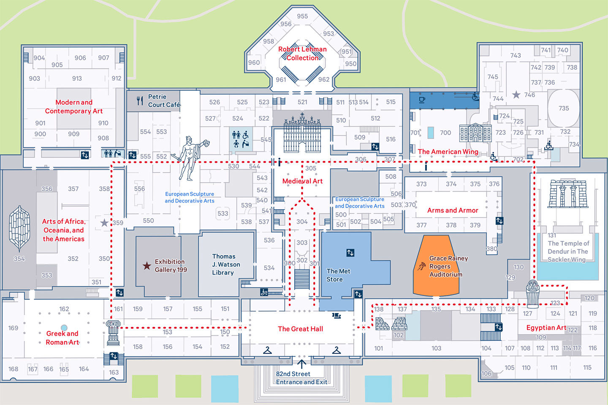

PSYC 2530: What is cognition?
A general overview
Matthew J. C. Crump
Last compiled 09/01/22
Reminders
This is the slide deck for Learning Module 1: What is cognition?
The reading is from chapter 1 What
is cognition?
Instances of Cognition

Tour guide of cognition

Questions of Cognition
- What is cognition?
- What questions are researchers asking and answering
in cognition
Defining Cognition
Ulric Neisser defined cognition in 1967 as:
“…all processes by which the sensory input is transformed, reduced,
elaborated, stored, recovered, and used.”
This definition is still current, but we will expand on it in this
course
Prospects of Cognition
Neisser is also quoted as saying:
“If X is an interesting or socially important aspect of memory, then
psychologists have hardly ever studied X”
Cognition is partly an unfulfilled promise…Lot’s of work has been
done, there are many more interesting questions to ask…
Research Questions
Research questions are typically about how some
cognitive ability works. For example:
- How do you control body movements, from finger
movements to facial expressions?
- How do you pay attention or ignore others?
- How did you forget what you were doing while you
were in the middle of doing something?
- How can you train your brain to get better at
something?
- How do you learn to read, and know the meaning of
words? How can you read faster?
- and many more…
Research Domains
Research questions are often grouped into domains of specialization.
Some of the textbook chapters are grouped by domain. Some general
domains in cognition include:
Learning, Memory, Attention, Perception, Reasoning, Categorization,
Concept formation, Judgment and decision-making, Language, Semantic
knowledge, Skill-acquisition, Music perception, Motor control, Cognitive
control, Creativity, Emotion, Object Recognition, Pattern Recognition,
Implicit learning, Working Memory, Individual Differences,
Consciousness, Mental Imagery, Planning, Statistical Learning…
Answering research questions?
How do cognitive researchers figure out how cognitive
abilities work?
The research cycle
The research cycle involves a wide variety of methods–such as the
scientific method–that researchers use to generate knowledge about
cognition.
- Let’s overview the research cycle with an example
from cognitive research on reading
Observation/Question
QUESTIONS: How can a person read faster? Are there
tricks? Does speed-reading work?

Research Topic Area
The background research stage involves finding and reading previous
work on your topic:
- Search for papers using Google Scholar
- Use the BC library search tool
- Collect and read the papers…
- check out Zotero to help you manage pdfs
A quick search
Let’s search Google
Scholar for “how to read faster and see what happens”
Finding the good stuff
Try out different search terms to find prior research that could be
highly relevant
- let’s search “does speed reading work?”
Rayner et al. 2016

Reading the review
The Rayner et al. (2016) paper provides a very in-depth review of the
prior literature on how people read.
If you wanted to come up with a new hypothesis
to test, it would be worth learning what other people already
did.
Let’s look at an example of a how a
testable hypothesis about reading was developed from
prior observations
Prior observation
When reading, your vision is most clear in the middle (where you are
foveating), and gets more blurry moving into the periphery.

(figure from Rayner et al, 2016)
Hypothesis
It is easy to see words you are looking at, but harder to see other
words in the sentence because peripheral vision is blurry
Hypothesis: Reading speed depends on visual acuity
of peripheral vision
Inference: Reading speed should be improved if
people could see words in the periphery more clearly
Experiment
The purpose of an experiment is to create a controlled situation to
test the hypothesis.
Independent variable (IV): A manipulation (at least
two conditions)
Dependent variable (DV): A measurement, taken under
each condition of the manipulation
Empirical question: Does the manipulation cause
differences in the measurement?
What manipulation?
What kind of manipulation could improve peripheral vision?
IV: Normal text and reading conditions
DV: Measure reading ability
IV: Change something to improve peripheral
vision
DV: Measure reading ability
Example manipulation
Miellet,
O’Donnell, and Sereno (2009) used a parafoveal Magnification
manipulation
IV: He could never get rid of the image from his
mind
Empirical Question
Empirical Question: Will parafoveal magnification
change reading ability compared to the control condition?
IV: He could never get rid of the image from his
mind
DV: Measure reading ability

DV: Measure reading ability
How do we measure reading ability?
Reading ability measures
There are many ways to measure aspects of reading
- Words per minute
- Memory test: can you remember which words you
read
- Comprehension test: did you understand what you
read?
- Perceptual span: how many letters/words can you see
at once
Measures aren’t always perfect
- A person could “read” really fast (high words per
minute), but comprehend nothing of what they read…
- so what is WPM really measuring?
- A person could pass a comprehension test without
reading based on general knowledge…
- so what is a comprehension test really
measuring?
So what happened with the reading
experiment?
Experimental Results
The research cycle in cognition produces
findings.
In an experimental design, findings refer to
whether or not the measurement was influenced by the
manipulation.
For example, did the parafoveal magnification
technique change reading ability?
Null results
Miellet et al. (2009) measured average sentence reading
time.
They found null results.
The parafoveal magnification (PM) manipulation did
not change reading time
Interpreting Data
Miellet et al. summarized their results in a table.
A general skill for this course is to gain experience interpreting
data from experiments
Data can presented in many different formats, usually tables and
graphs
Drawing Inferences
After results are collected and summarized, a next step is to draw
inferences about the hypothesis, and generate more questions.
Making peripheral words bigger does not improve reading speed
- Why didn’t it work?
- Make the words even bigger?
- What does this say about how reading works?
- How does reading work?
Explanations in Cognition
There are many different approaches to explanation in cognition
We will spend the rest of the semester learning about ways that
cognitive phenomena are “explained”
Levels of Analysis
Explanations can take place at different levels
Vision scientist David Marr describes three levels of analysis:
- Computational
- Representational/Algorithmic
- Hardware
Computational Level
The computational level refers to the goal of the
process
For example, what are the goals of reading processes?
Representational level
The representational/algorithmic level refers to the:
- inputs to a process,
- the transformations that modify the inputs
(algorithm), and 3. the outputs of the process.
For example, what kind of perceptual information is received for
reading purposes, and how perception transformed into semantic
knowledge?
Hardware level
The hardware level refers to how the representations and algorithms
are physically instantiated
For example, what are the brain mechanisms of reading and how do they
work?
Explaining reading
Reading is a very interesting and complicated cognitive ability
What would an explanation of reading look like?
What would you want the explanation to be able to do?
Common answers
A generic answer in cognition to the preceding questions might
be:
A theory or explanation of reading should be able to:
- account for all experimental findings in the
reading literature
- predict the results of new experiments
- inspire new lines of research
- generate applications
Applied Cognition
The research cycle generates more research, and sometimes it also
generates real-world applications.
Across the semester we will encounter many applications of cognitive
research.
Speed-reading technology?
Not all applications are made equal.
There are many speed-reading methods that claim to improve reading
speed.
Unfortunately, according to Rayner et al. (2016), reading research
has not shown these methods to be effective
Implications of Cognitive research
Cognition is connected to many topics in our
daily life.
Cognitive research has the potential to help us
understand ourselves, our society, and other cognitive creatures
(animals, and even machines)
Applied cognitive research could help repair
cognitive impairments, improve everyday cognition, and lead to useful
smart technologies.
Socio-Historical implications
Psychological and cognitive research has already had implications for
society over the last 150 years.
The history shows inequalities in the social benefits and costs of
research applications.
We will discuss some of this history across the semester.
Questions to keep in mind
What are the goals of the cognitive sciences and research in
cognitive psychology?
Who has been involved in setting those goals?
Are the goals useful?
What kind of questions about cognition have already been asked by
researchers?
What were the scientific as well as social-historical reasons for why
those researchers asked those questions?
What answers were found, and how were they informative or not
informative about how cognition works?
How do the measurements and tools that researchers use to ask
questions influence the kind of picture they build about how cognition
works?
What kinds of questions about cognition are not being asked that
should be asked?
Why are they not being asked?
What benefits to society have been produced by the cognitive
sciences?
Have the benefits been spread equitably across different groups of
people?
What costs to society have been produced by the cognitive
sciences?
How are the costs shared by society?
Are there injustices resulting from cognitive science research?
Have they been adequately addressed?
How should society decide whether or not to proceed with different
kinds of research?
What’s next?
Complete the quiz and/or assignment for this module by the suggested
due date
No class Monday (Labor Day)
Next class is our first course assessment (Wednesday, September
7th)